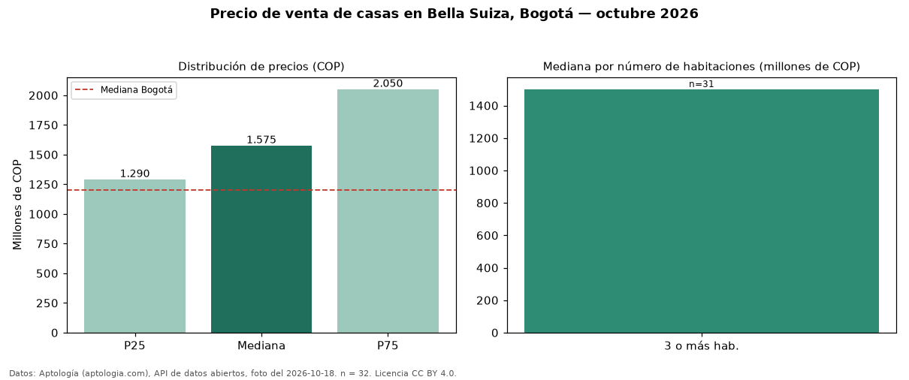

Precio de venta de casas en Bella Suiza, Bogotá — octubre 2026
Con 32 avisos vigentes, el precio mediano de casas en venta en Bella Suiza (localidad de Usaquén), Bogotá es COP 1,57 mil millones. Frente al total de Bogotá (COP 1,20 mil millones), el barrio está 31 % por encima. El segmento con más oferta es el de 3 o más habitaciones (31 avisos, mediana COP 1,50 mil millones). 88 % de los avisos incluye parqueadero, y su mediana (COP 1,50 mil millones) está 5 % por debajo de la general. Por mediana, es el puesto 45 de 148 barrios de Bogotá con al menos 30 avisos de casas en venta: en la franja media. La mitad central de los avisos va de COP 1,29 mil millones a COP 2,05 mil millones (razón 1,6), una dispersión moderada. El aviso más barato pide COP 350 millones y el más caro COP 3,80 mil millones. Datos: Aptología (aptologia.com), API de datos abiertos, licencia CC BY 4.0 — https://www.aptologia.com/casas-en-venta/bogota/bella-suiza. Archivos: PDF de 2 páginas, CSV con las cifras y gráfica PNG.

| Avisos únicos | 32 |
|---|---|
| Percentil 25 | COP 1.290.000.000 |
| Mediana | COP 1.575.000.000 |
| Percentil 75 | COP 2.050.000.000 |
Fuente: avisos vigentes de portales inmobiliarios recopilados por Aptología, deduplicados (mínimo 30 avisos únicos por celda). Precios pedidos, no cerrados. Fecha: 2026-10-18.